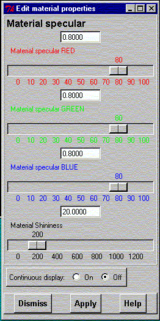

**************************************************************************
Edit material properties widget
Leif Laaksonen CSC 1996
**************************************************************************
Edit surface material properties. It is possible to change the following properties:
The colour components define the colour of the reflecting light and the material shininess defines the "width" of the reflecting light (0 = wide and 128 = very concentrated).
Observe that the new properties are not shown until the "Display" command is executed or before the user presses the gOpenMol logo logi in the right upper corner.
If you want the new properties to be shown immediately while you change the slider values click the "Continuous display" on.

Line command: see edit command
**************************************************************************
LUL/1996
**************************************************************************